Воспроизведение
Поддержка .ogg, .mp3, .flac и .opus — воспроизведение локальных треков из папки.
Возможности
Поддержка .ogg, .mp3, .flac и .opus — воспроизведение локальных треков из папки.
Создавай плейлисты и собирай треки в подборки — удобно для альбомов, сетов и любимых композиций.
Добавляй станции по URL — MP3-потоки из каталогов вроде radio-browser.info. Инструкция в docs/radio.html.

Несколько визуальных тем для внешнего вида плеера и настроения.
Можно указать свою папку с музыкой. Настройки сохраняются автоматически.
Быстрый старт
WorldMachinePlayer.exe.GitHub Issues
Issues ведут в тот же проект, где лежит исходный код. Так репорт или предложение не потеряется.
Фан-проект
World Machine Player основан на OneShot: World Machine Edition. Права на персонажей, музыку и материалы принадлежат Team OneShot и Future Cat LLC.